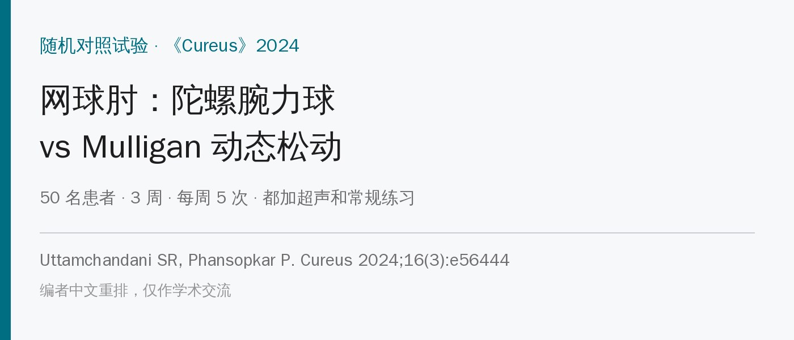
🔖原文信息（编者中文重排）
📚 文献信息
▪ Uttamchandani SR, Phansopkar P. Efficacy of PowerBall Versus Mulligan Mobilization With Movement on Pain and Function in Patients With Lateral Epicondylitis: A Randomized Clinical Trial. Cureus. 2024;16(3):e56444.
▪ 作者来自印度 Datta Meghe 高等教育与研究学院 Ravi Nair 物理治疗学院
▪ 单盲随机对照试验；DOI：10.7759/cureus.56444
网球肘（肱骨外上髁炎）的保守治疗五花八门。这篇比的是两个都挺“接地气”的东西：陀螺腕力球（PowerBall，靠手腕转动让球里的陀螺加速，转得越快阻力越大）和 Mulligan 动态关节松动（治疗师给肘关节一个持续的外侧滑动，同时让患者主动握拳）。
作者结论是腕力球组更好。但仔细核对原文自己的数据，这个结论站不住：治疗后的疼痛和 PRTEE 评分其实是 Mulligan 组更低，PRTEE 的改善量在表里还被两组对调了。这篇真正有用的，是它把两种方案的 3 周剂量写得很具体，可以直接拿来参考。
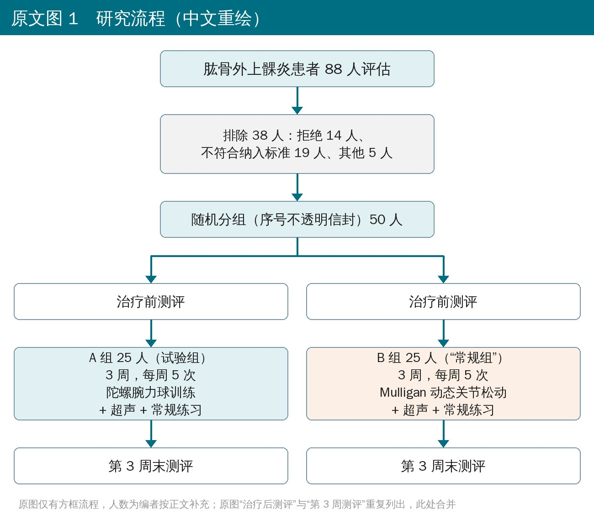
🔖原文图 1 研究流程
• 对象：50 名 20～50 岁的网球肘患者（症状超过 2 周，桡侧腕伸肌腱压痛，Mill 试验阳性），每组 25 人
• 排除：肘部骨折、手术史、肘关节不稳、明显提携角异常或过伸、近期外伤或神经系统疾病
• 两组都是 3 周、每周 5 次，都先做超声和常规练习，然后 A 组做腕力球，B 组做 Mulligan 动态松动
• 测评：治疗前和第 3 周末，由不知道分组的物理治疗研究生评估：视觉模拟评分（静息、活动）、PRTEE（网球肘患者自评量表）、无痛握力、肘腕活动度
🔖原文图 2 Mill 试验
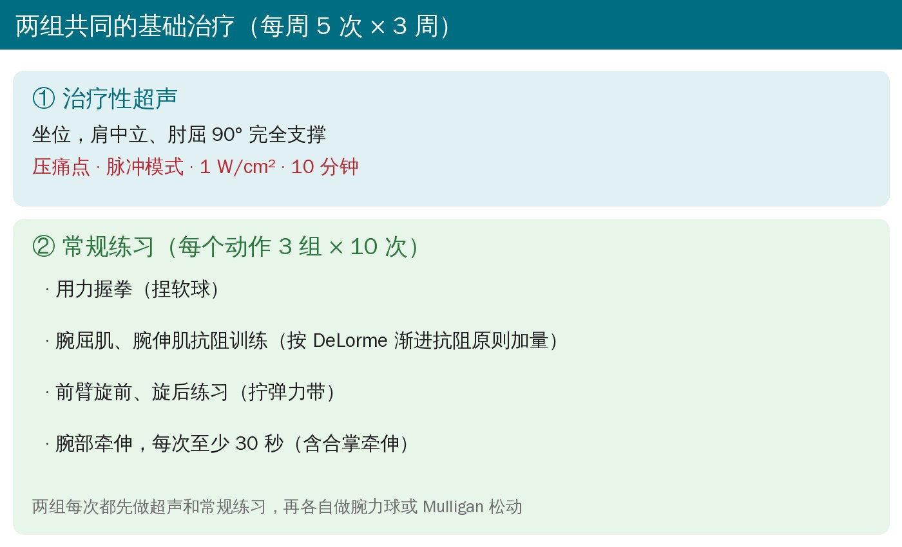
🔖两组共同的基础治疗
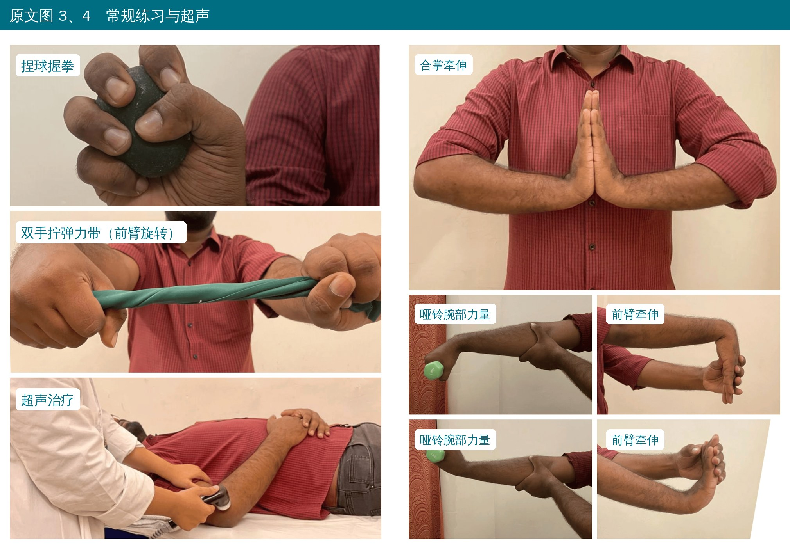
🔖原文图 3、4 常规练习与超声
• 超声：坐位，肩中立、肘屈 90° 完全支撑；在压痛点用脉冲模式 1 W/cm²，10 分钟
• 练习：用力握拳（捏球）、腕屈肌和腕伸肌抗阻训练（按 DeLorme 渐进抗阻原则）、前臂旋前旋后（拧弹力带）、腕部牵伸每次至少 30 秒（含合掌牵伸）
• 每个动作 3 组 × 10 次
• 握力测法：坐位、手臂垂于体侧，尽力握 3～5 秒，测 3 次取平均，每次间隔约 15 秒；以“无痛握力”为准
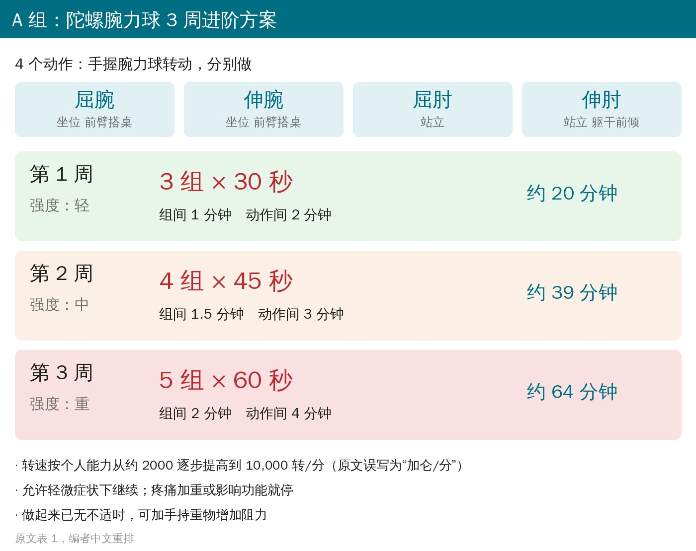
🔖A 组腕力球 3 周进阶
• 4 个动作：屈腕、伸腕（坐位、前臂搭在桌上）、屈肘（站立）、伸肘（站立、躯干前倾）
• 第 1 周 3 × 30 秒 → 第 2 周 4 × 45 秒 → 第 3 周 5 × 60 秒，组间休息 1 → 1.5 → 2 分钟，动作间休息 2 → 3 → 4 分钟
• 单次训练时长从约 20 分钟加到约 64 分钟
• 转速按能力从约 2000 逐步提高到 10,000 转/分
• 疼痛规则：轻微症状可以继续，疼痛明显加重或影响功能就停；完全没有不适时，可以加手持重物增加阻力
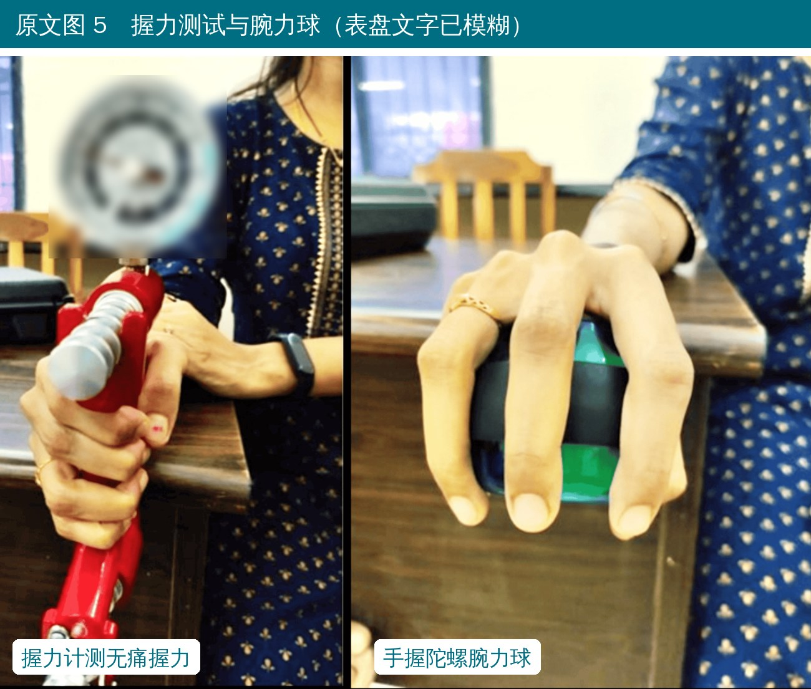
🔖原文图 5 握力测试与腕力球
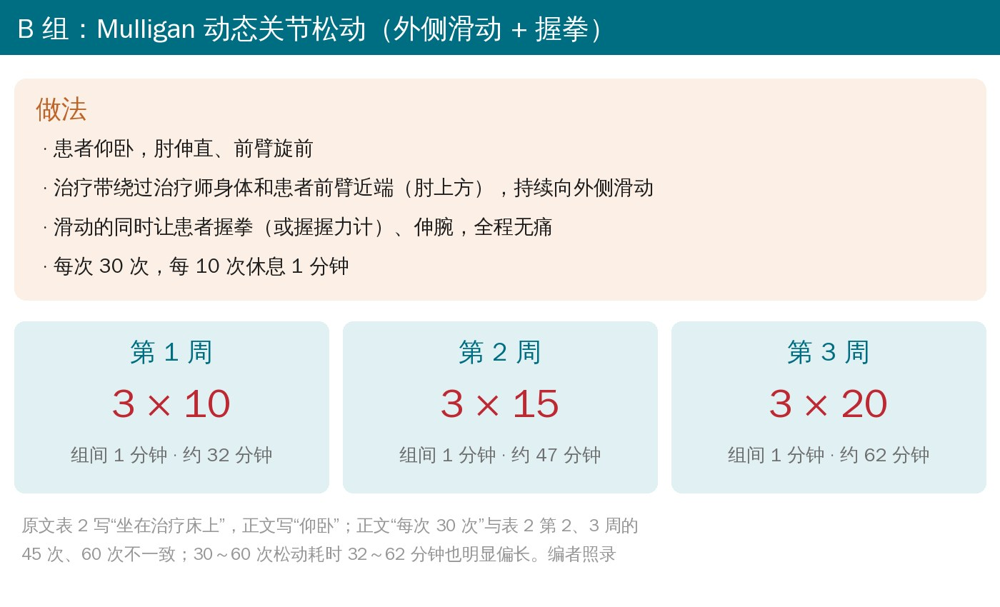
🔖B 组 Mulligan 动态关节松动
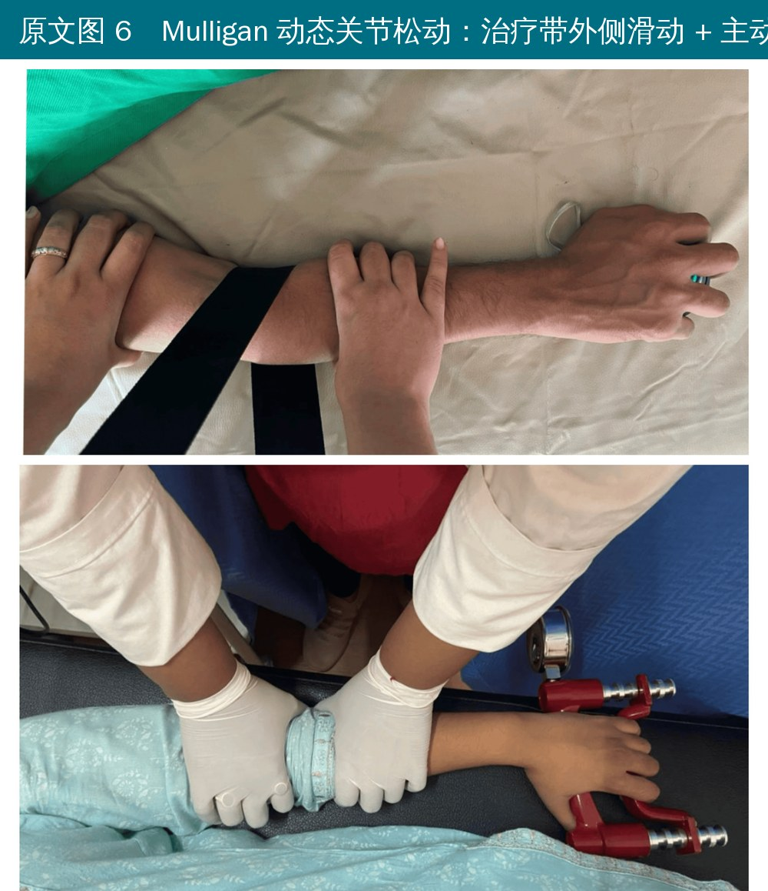
🔖原文图 6 Mulligan 动态关节松动
• 患者仰卧，肘伸直、前臂旋前；治疗带绕过治疗师和患者前臂近端（肘上方），持续给肘关节一个向外侧的滑动
• 滑动的同时，让患者握拳或握握力计、伸腕，必须全程无痛
• 剂量：第 1 周 3 × 10 → 第 2 周 3 × 15 → 第 3 周 3 × 20，组间休息 1 分钟
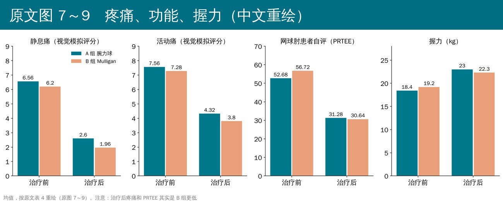
🔖原文图 7～9 疼痛、功能、握力
• 两组治疗后疼痛、PRTEE、握力、活动度都明显改善，这一点没有疑问
• 作者说腕力球组在所有指标上都优于 Mulligan 组，并称其“在 PRTEE 上效果高出 21%”
• 但看原文自己的数：治疗后静息痛 A 组 2.60、B 组 1.96；活动痛 A 组 4.32、B 组 3.80；PRTEE A 组 31.28、B 组 30.64——都是 B 组更低
• 握力 A 组 23.0 kg、B 组 22.3 kg，A 组略好；活动度 A 组改善量多 1～3°，临床意义有限
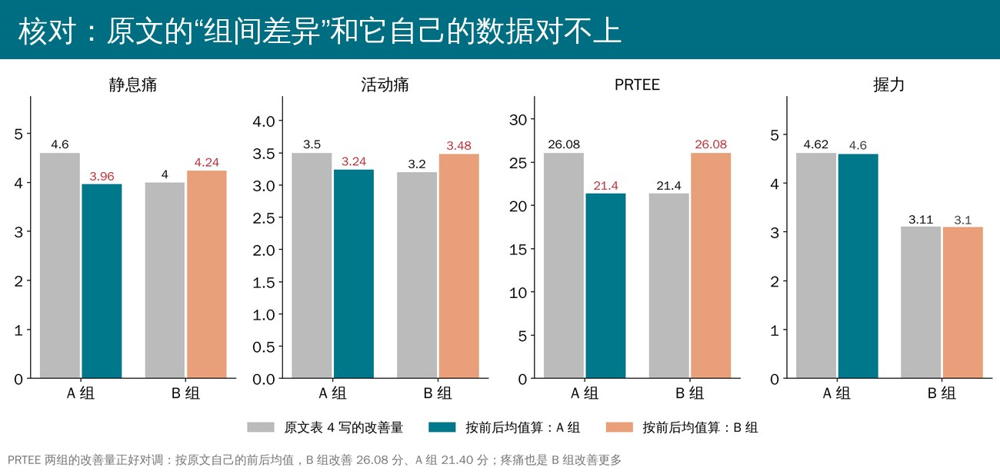
🔖原文报告的改善量 vs 按原文前后均值算出的改善量
最关键的是 PRTEE：按原文表 4 的前后均值，A 组改善 21.40 分，B 组改善 26.08 分，而表里“均值差”一栏正好写反了（A 组 26.08、B 组 21.40）。作者“腕力球更好”的结论，很大程度上建立在这个对调上。
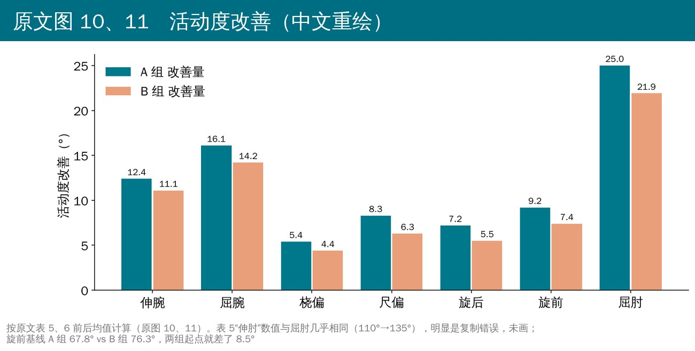
🔖原文图 10、11 活动度改善
原文里对不上的地方（不少）：
• PRTEE 的组间改善量两组对调（见上图）；静息痛、活动痛的“均值差”也和前后均值算出来的对不上
• B 组 PRTEE 从 56.72 降到 30.64（降了 26 分），组内比较却写“P=0.055，不显著”，而 A 组降 21 分反而显著
• 表 5“伸肘”的数值（110° → 135°）和屈肘几乎一样，伸肘正常应接近 0°，明显是复制错误；屈肘一行的“均值差”又写成了握力的 4.62、3.11
• 表 3 年龄只给了范围，脚注却说是“均值 ± 标准差”；按原文给的年龄段人数（8/8/9 vs 11/9/5）算卡方约 1.7、P≈0.43，不可能得出 P=0.0013
• 旋前基线 A 组 67.8°、B 组 76.3°，两组起点就差 8.5°，没做调整
• 统计方法写“用配对 t 检验比较组间差异”，组间应该用独立样本 t 检验；正文 VAS 组间 P=0.041，表 4 写 0.01
• 腕力球转速单位写成“加仑/分钟”；表 1 用 A/B/C 表示强度等级，和 A 组、B 组的命名混在一起
• Mulligan 组：正文写仰卧、每次 30 次，表 2 写坐位、第 2、3 周 45 次和 60 次；30～60 次松动耗时 32～62 分钟也不合常理
• 摘要和结论提到“伸腕力量、肩内外旋向心和离心力量提高”，全文根本没测这些指标
• 讨论把腕力球组的优势归功于“配合了超声”，但两组都做了超声；局限性里还把“年龄范围窄”当成优点
• 没有随访，只看了 3 周末的即时效果
• 两组都叠加了超声和常规练习，看不出腕力球或 Mulligan 本身的作用
• 纳入标准“症状超过 2 周”，急性和慢性患者混在一起
• 不能据此说腕力球优于 Mulligan 松动：按原文数据，两组 3 周后差不多，疼痛和 PRTEE 甚至是 Mulligan 组略好
• 两种方案都可以作为网球肘综合康复的一部分，原文给的剂量可以直接借用：腕力球 3×30 秒 → 4×45 秒 → 5×60 秒；Mulligan 外侧滑动 + 握拳 3×10 → 3×15 → 3×20
• 腕力球便宜、可在家练，疼痛规则简单（轻微不适可以练，加重就停），适合作为家庭作业
• Mulligan 松动的关键是“全程无痛”，有即时止痛效果时可以作为练习前的准备
• 基础的握力、腕伸肌渐进抗阻和牵伸，两组都有，这部分本身就很重要
原文表 1 腕力球训练方案
| 周 | 强度 | 动作 | 组数 × 时间 | 组间休息 | 动作间休息 | 体位 | 总时长 |
|---|---|---|---|---|---|---|---|
| 第 1 周 | 轻 | 屈腕 / 伸腕 / 屈肘 / 伸肘 | 3 × 30 秒 | 1 分钟 | 2 分钟 | 屈伸腕坐在桌旁；屈肘站立；伸肘站立躯干前倾 | 20 分钟 |
| 第 2 周 | 中 | 同上 | 4 × 45 秒 | 1 分 30 秒 | 3 分钟 | 同上 | 39 分钟 |
| 第 3 周 | 重 | 同上 | 5 × 60 秒 | 2 分钟 | 4 分钟 | 同上 | 64 分钟 |
原文表 2 Mulligan 动态关节松动方案
| 周 | 组数 × 次数 | 组间休息 | 体位 | 总时长 |
|---|---|---|---|---|
| 第 1 周（5 次） | 3 × 10 | 1 分钟 | 坐在治疗床上 | 32 分钟 |
| 第 2 周（5 次） | 3 × 15 | 1 分钟 | 坐在治疗床上 | 47 分钟 |
| 第 3 周（5 次） | 3 × 20 | 1 分钟 | 坐在治疗床上 | 62 分钟 |
原文表 3 基线特征
| A 组 | B 组 | P | |
|---|---|---|---|
| 年龄范围 | 22～49 岁 | 21～45 岁 | 0.0013（原文如此） |
| 男 | 18（72%） | 14（56%） | 0.24 |
| 女 | 7（28%） | 11（44%） |
原文表 4 主要结局（均值 ± 标准差）
| 指标 | A 组 前 | A 组 后 | P | B 组 前 | B 组 后 | P | 均值差 A | 均值差 B | 组间 P |
|---|---|---|---|---|---|---|---|---|---|
| 静息痛 | 6.56 ± 0.87 | 2.60 ± 0.76 | 0.0003 | 6.20 ± 1.12 | 1.96 ± 0.68 | 0.005 | 4.6 ± 1.0 | 4.0 ± 1.0 | 0.01 |
| 活动痛 | 7.56 ± 0.77 | 4.32 ± 0.59 | 0.003 | 7.28 ± 1.06 | 3.80 ± 1.00 | 0.007 | 3.5 ± 0.9 | 3.2 ± 1.1 | 0.03 |
| PRTEE | 52.68 ± 7.22 | 31.28 ± 5.80 | 0.001 | 56.72 ± 5.94 | 30.64 ± 5.00 | 0.055 不显著 | 26.08 ± 6.36 | 21.40 ± 4.81 | 0.005 |
| 握力（kg） | 18.4 ± 2.8 | 23.0 ± 1.6 | 0.03 | 19.2 ± 2.0 | 22.3 ± 1.6 | 0.001 | 4.62 ± 2.48 | 3.11 ± 1.05 | 0.007 |
红字：按前后均值，PRTEE 改善量应为 A 组 21.40、B 组 26.08。黄底：治疗后 B 组数值更好。
原文表 5 肘与前臂活动度（°，均值 ± 标准差）
| 动作 | A 组 前 | A 组 后 | B 组 前 | B 组 后 | 均值差 A | 均值差 B | 组间 P |
|---|---|---|---|---|---|---|---|
| 屈肘 | 110.0 ± 4.8 | 135 ± 4.6 | 109.7 ± 3.4 | 131.6 ± 7.2 | 4.62 ± 2.48（原文如此） | 3.11 ± 1.05（原文如此） | 0.034 |
| 伸肘 | 110.2 ± 4.8 | 135.4 ± 4.6 | 109.7 ± 3.4 | 131.6 ± 7.2 | 25.20 ± 2.94 | 21.88 ± 7.00 | 0.034 |
| 旋后 | 75.0 ± 2.8 | 82.2 ± 2.6 | 75.4 ± 2.8 | 80.9 ± 2.1 | 7.24 ± 2.07 | 5.48 ± 2.10 | <0.001 |
| 旋前 | 67.8 ± 2.4 | 77.0 ± 1.7 | 76.3 ± 3.3 | 83.7 ± 2.5 | 9.12 ± 2.60 | 7.40 ± 1.61 | <0.001 |
组内比较 P 均 <0.05。
原文表 6 腕活动度（°，均值 ± 标准差）
| 动作 | A 组 前 | A 组 后 | B 组 前 | B 组 后 | 均值差 A | 均值差 B | 组间 P |
|---|---|---|---|---|---|---|---|
| 屈腕 | 59.8 ± 6.4 | 75.9 ± 4.3 | 58.8 ± 3.1 | 73.0 ± 1.4 | 16.04 ± 3.38 | 14.12 ± 2.54 | 0.028 |
| 伸腕 | 55.0 ± 3.1 | 67.4 ± 2.0 | 55.5 ± 2.2 | 66.6 ± 1.8 | 12.40 ± 2.71 | 11.04 ± 1.51 | 0.033 |
| 桡偏 | 12.4 ± 1.5 | 17.8 ± 1.2 | 13.0 ± 1.1 | 17.4 ± 1.1 | 5.36 ± 1.68 | 4.36 ± 1.38 | 0.026 |
| 尺偏 | 25.3 ± 2.3 | 33.6 ± 1.1 | 25.7 ± 2.0 | 32.0 ± 2.0 | 8.32 ± 2.71 | 6.56 ± 1.73 | 0.002 |
组内比较 P 均 <0.001。
欢迎关注悦美力公众号，获取更多物理治疗的专业知识！
📄参考文献：
Uttamchandani SR, Phansopkar P. Efficacy of PowerBall Versus Mulligan Mobilization With Movement on Pain and Function in Patients With Lateral Epicondylitis: A Randomized Clinical Trial. Cureus. 2024;16(3):e56444. doi:10.7759/cureus.56444
原文以 CC BY 4.0 协议开放获取。本文为学术交流用的中文解读，照片引自原文图 2～6（图 2 原文注明引自其参考文献 17），流程、方案卡与结果图为编者中文重绘，表格为编者翻译。